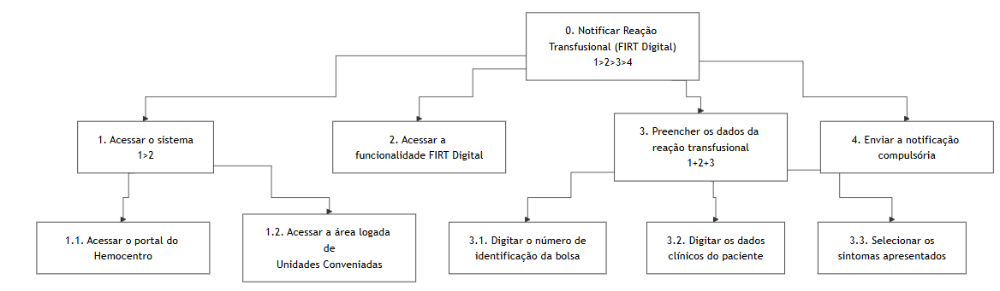

HTA - 4
Introdução
A Análise Hierárquica de Tarefas (HTA - Hierarchical Task Analysis) é um dos métodos de análise de tarefas mais consolidados na área de Interação Humano-Computador (IHC). Diferente de métodos que focam em uma lista sequencial de cliques ou ações, a HTA inicia sua abordagem pela definição dos objetivos dos usuários. Seu propósito central é relacionar o que as pessoas fazem, o porquê de fazerem e quais as consequências caso a tarefa não seja executada de maneira correta. A partir de um objetivo de alto nível, o método realiza uma decomposição em subobjetivos (organizados por planos lógicos) até atingir as operações fundamentais, que são especificadas pelas condições de entrada (input), ações propriamente ditas e condições de satisfação (feedback).
No escopo de um projeto de IHC, a HTA serve para avaliar sistemas existentes, guiar o (re)design de novas interfaces ou validar a introdução de uma nova tecnologia no cotidiano dos usuários. Ao detalhar o comportamento do usuário dessa forma, o designer consegue identificar com precisão como o sistema facilita ou impede que as pessoas alcancem seus objetivos, embasando a identificação de gargalos de usabilidade e a formulação de recomendações de design para o produto final.
Analise HTA - Notificar Reação Transfusional (FIRT Digital)
A Análise Hierárquica de Tarefas (HTA) foi utilizada para desdobrar a interação entre usuário e sistema em metas e submetas, facilitando a detecção de gargalos e falhas críticas. O foco reside em converter processos analógicos em fluxos digitais eficientes, assegurando que a estrutura de ações atenda à prontidão clínica necessária para a Persona.
- Decidir os objetivos da análise: O objetivo desta análise é avaliar a modificação de um sistema existente (o portal da Fundação Hemocentro de Brasília)¹ através da criação de uma nova funcionalidade interativa (FIRT Digital) focada na notificação compulsória e bloqueio sistemático de lotes de sangue.
- Obter consenso sobre objetivos e medidas de sucesso
- Qual evidência objetiva indicará que o objetivo foi atingido? O sucesso da tarefa será evidenciado pela emissão de um alerta sonoro e visual na tela confirmando que a notificação foi enviada e o lote de sangue suspeito foi bloqueado preventivamente no sistema.
- Quais as consequências da falha em atingir esse objetivo? A falha na execução ou lentidão do sistema resultará na disponibilidade contínua de um hemocomponente incompatível ou contaminado, colocando em risco de morte outros pacientes da Hemorrede.
- Identificar fontes de informação: Considerando que a observação direta no hospital sobre um evento de emergência é inviável, utilizamos como fontes de informação a literatura da área, o cenário previamente modelado (relato de intercorrência transfusional aguda) e o conhecimento de especialistas que participarão da validação técnica.
-
Coletar dados e esboçar a decomposição: A tarefa principal foi desdobrada nos seguintes subobjetivos, de forma mutuamente exclusiva e exaustiva:
- Notificar Reação Transfusional (FIRT Digital) e bloquear lote
- Acessar o sistema logado de Unidades Conveniadas
- Acessar a nova funcionalidade FIRT Digital
- Preencher os dados da reação transfusional e da bolsa
- Enviar a notificação de urgência
-
Verificar a validade: A decomposição estruturada neste documento passará por uma verificação de validade prática junto às partes interessadas, mediante a apresentação do cenário e simulação dos passos da interface com um profissional de enfermagem real, utilizando uma lista de verificação.
- Identificar operações significativas: As operações mais críticas para o sucesso do objetivo são a "digitação do número de identificação da bolsa" e a ação final de "Enviar Notificação de Urgência", dado o contexto de forte pressão temporal em que o usuário se encontra.
- Gerar e testar hipóteses sobre erros: A análise prevê a ocorrência de falhas baseadas em habilidades devido à urgência e ao estresse da situação, como erros de coordenação motora ao digitar rapidamente a numeração extensa da bolsa. Para mitigar esse erro, recomenda-se que o sistema faça o cruzamento em tempo real do número da bolsa com o banco de dados do Hemocentro para validar a entrada instantaneamente.
Tabela 1 - Análise Hierárquica de Tarefas (HTA) - Notificar Reação Transfusional (FIRT Digital)
| Objetivos / Operações | Problemas e Recomendações |
|---|---|
| 0. Notificar Reação Transfusional (FIRT Digital) (1>2>3>4) |
entrada: Paciente apresentando sintomas de reação transfusional durante o plantão. feedback: Emissão de alerta sonoro e visual com a mensagem "FIRT enviado com sucesso. Lote bloqueado preventivamente". plano: Executar os passos 1, 2, 3 e 4 sequencialmente. recomendação: O sistema deve garantir alta disponibilidade, dada a gravidade dos erros e o risco de morte em caso de falha. |
| 1. Acessar o sistema (1>2) |
plano: Realizar 1.1 e 1.2 sequencialmente. |
| 1.1. Acessar o portal do Hemocentro | problema: Em situações de urgência, a navegação comum pode ser lenta. recomendação: Oferecer um atalho direto e destacado na página inicial para "Emergências / Hemovigilância". |
| 1.2. Acessar a área logada de Unidades Conveniadas | |
| 2. Acessar a funcionalidade FIRT Digital | ação: Clicar no botão ou link "Notificação Compulsória de Reação Transfusional". |
| 3. Preencher os dados da reação transfusional (1+2+3) |
plano: Executar 3.1, 3.2 e 3.3 de forma independente de ordem (em paralelo). problema: Devido à forte pressão de tempo do contexto de uso, o usuário pode digitar a numeração da bolsa com erros de coordenação motora ou aplicar dados invertidos. recomendação: O sistema deve cruzar o número da bolsa em tempo real com o banco de dados do Hemocentro para validar a entrada instantaneamente. |
| 3.1. Digitar o número de identificação da bolsa | |
| 3.2. Digitar os dados clínicos do paciente | |
| 3.3. Selecionar os sintomas apresentados | ação: Marcar caixas de seleção (checkboxes) correspondentes aos sintomas (ex: febre, calafrios). |
| 4. Enviar a notificação compulsória | ação: Clicar no botão "Enviar Notificação Compulsória / Bloquear Lote". recomendação: Minimizar diálogos de confirmação excessivos para não atrasar a tarefa crítica, utilizando prevenção ativa de erros. |
Fonte: Gabriel Diniz - (2026).
Figura 1 - Análise Hierárquica de Tarefas (HTA) - Notificar Reação Transfusional (FIRT Digital)
{kind=link}

Fonte: Gabriel Diniz (2026).
Referências Bibliográficas
[1] BARBOSA, Simone Diniz Junqueira et al. Interação Humano-Computador e Experiência do Usuário. 1. ed. Rio de Janeiro: Autopublicação, 2021.
Histórico de Versões
| Versão | Descrição | Data | Autor(es) | Data de revisão | Revisor(es) |
|---|---|---|---|---|---|
| 1.0 | Criação do documento da análise de tarefa HTA | 01/05/2026 | Gabriel Diniz | 03/05/2026 | Pedro Lucas |